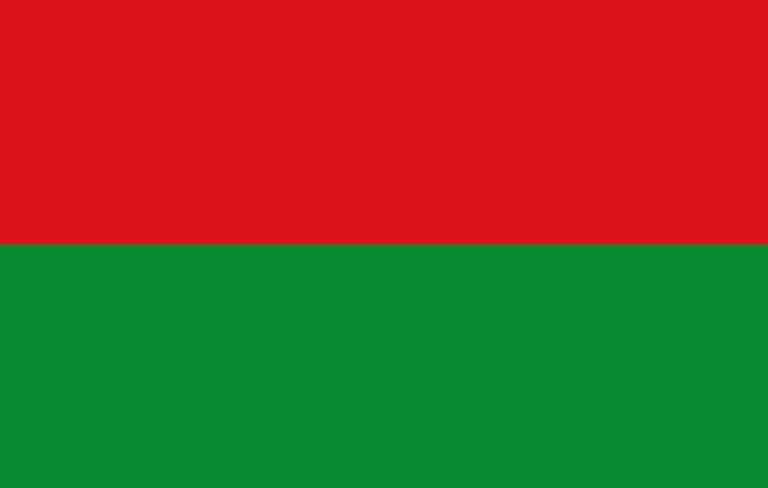
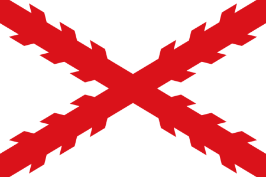
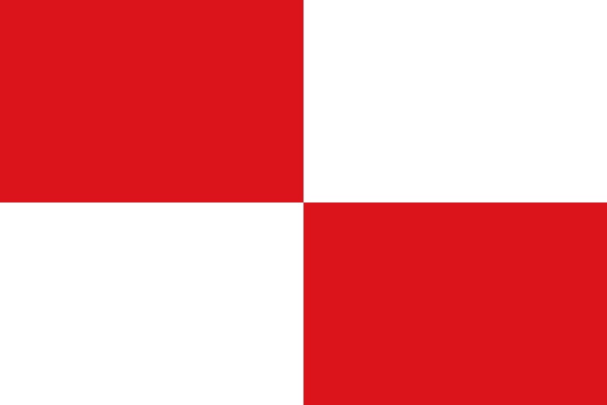
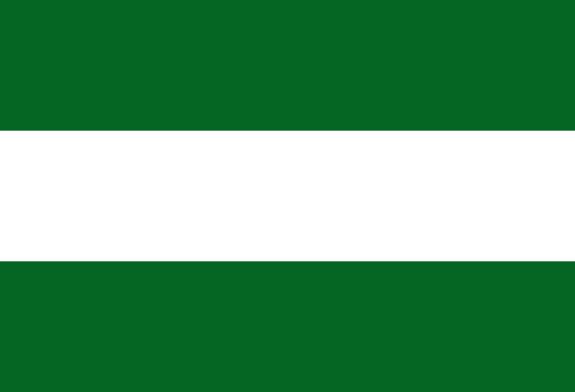
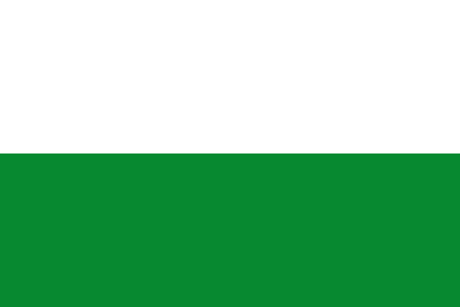

Fundada en 1548, La Paz fue un importante centro de paso para el comercio y la residencia de encomenderos españoles. Hoy en día, es la capital administrativa de Bolivia y un importante centro político y económico.
Last updated 3 mins ago

Fundada en 1538, Chuquisaca fue una importante ciudad colonial y fue declarada capital constitucional de Bolivia.
Tarija es un departamento productor de vino y uno de los centros de la industria vitivinícola de Bolivia.
Fundada en 1574, Cochabamba fue un importante centro agrícola y se convirtió en un importante centro económico y cultural de Bolivia.

Surgió en 1546 como un centro de producción de plata y se convirtió en uno de los centros urbanos más grandes del mundo colonial. Potosí fue una importante fuente de riqueza para España y Europa.
Oruro es conocido por su Festival de la Virgen del Socavón, una importante celebración religiosa y cultural.

Uno de los cinco departamentos originales de Bolivia, Santa Cruz ha experimentado un importante crecimiento económico y social en las últimas décadas.
Creado en 1842, Beni es un departamento rico en recursos naturales, especialmente la madera y los productos agropecuarios.

Pando es un departamento fronterizo con Brasil y Argentina, conocido por su selva amazónica y sus recursos naturales.